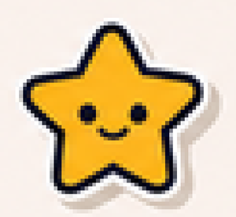
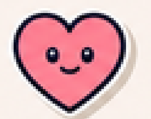
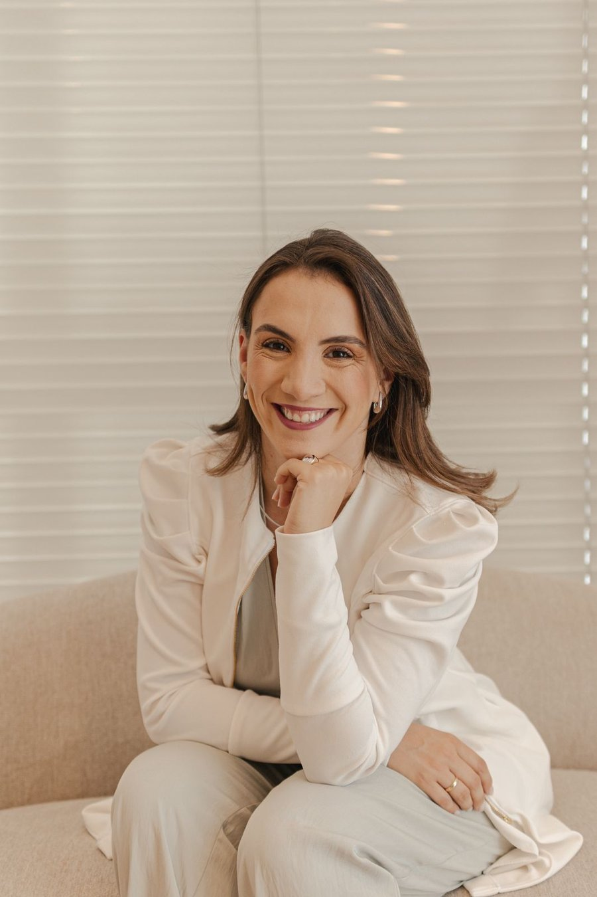
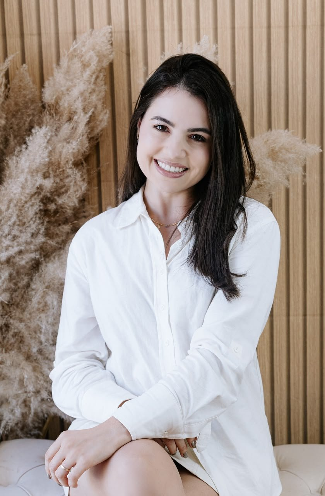
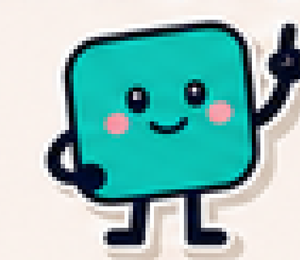
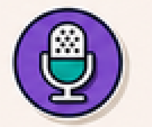

Media Kit · Primeiros Passos Podcast · 2026


O Primeiros Passos acompanha mulheres em toda a jornada da maternidade — do desejo de engravidar à rotina real com os filhos. Conduzido por uma médica especialista em gestação de alto risco e uma educadora parental, unindo ciência e afeto em cada conversa.
Quero conhecer o projeto →Conceito
Toda mulher que sonha em ser mãe atravessa uma sequência de primeiros passos muito antes do parto: a decisão de tentar, a espera, as dúvidas, os exames, as descobertas — boas e difíceis. O Primeiros Passos nasce para caminhar ao lado dela em cada um desses momentos, com informação médica séria e uma conversa de mulher para mulher, sem julgamento e sem pressa.
Não é um podcast sobre bebês. É um podcast sobre o que acontece com quem decide construir uma família — antes, durante e depois de qualquer "primeiro passo".
Conteúdo acessível, com linguagem simples e acolhedora — sem jargão médico desnecessário.
Falas que abraçam, valorizam e respeitam cada mulher e cada família, em qualquer fase da jornada.

Informação médica e emocional para cada etapa — da tentativa de engravidar à primeira infância.

De pequenas dúvidas a grandes decisões — cada episódio é um passo adiante.
Quem conduz
Acompanha gestações de alto risco há anos, ao lado de mulheres nos momentos mais delicados da espera por um filho. No Primeiros Passos, traz a base médica e o olhar técnico que a jornada da maternidade exige — sem perder o acolhimento de quem já segurou a mão de muitas mães com medo.
Origem do alcance
Fala sobre criação respeitosa, rotina com os filhos e os bastidores nada perfeitos da maternidade. No Primeiros Passos, é a voz de quem vive o dia a dia — os desafios, as pequenas vitórias e os aprendizados que só a prática ensina.
Origem do alcance
Parcerias
Formatos pensados para o lançamento do Primeiros Passos Podcast — cotas fundadoras com condições exclusivas.
Cota Fundadora
Sua marca associada desde o primeiro episódio, com exclusividade de categoria durante a temporada de lançamento.
Consultar disponibilidade →
Episódio Patrocinado
Um episódio inteiro co-criado com sua marca, sobre um tema relevante da jornada da maternidade.
Consultar disponibilidade →
Post Editorial Instagram
Conteúdo nativo nos perfis das apresentadoras — formato editorial, com aprovação prévia da marca.
Consultar disponibilidade →
Palestra / Live
Marina e/ou Letícia como convidadas no seu evento, live ou treinamento sobre saúde gestacional e parentalidade.
Consultar disponibilidade →
Cada parceria é construída sob medida para o momento de lançamento. Uma conversa de 30 minutos é suficiente para mapear o que faz sentido.
Falar com a equipe →Próximo passo
Não existe cota padrão. Existe o que faz sentido para o seu objetivo e para o momento de lançamento do podcast.
+55 47 9125-2172 · vendas@grupoinvoice.com.br